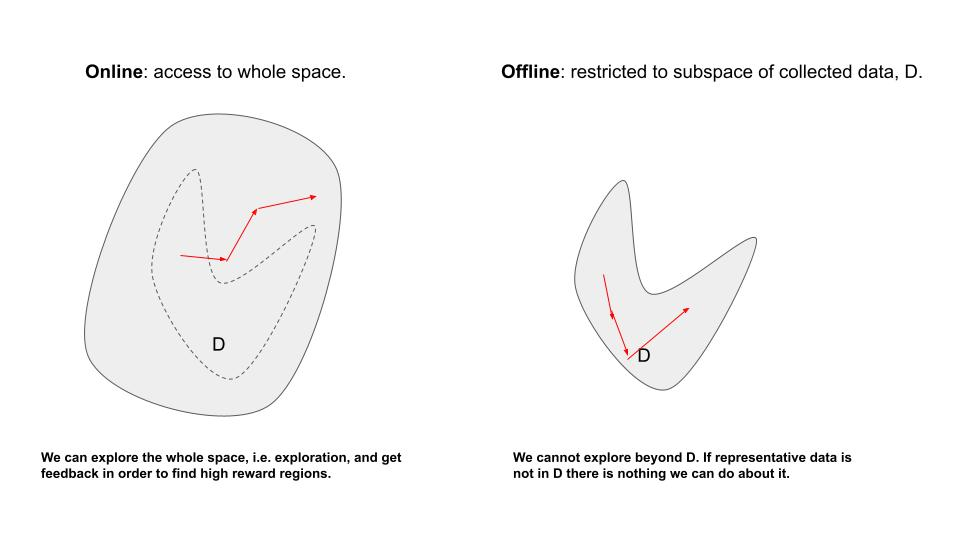
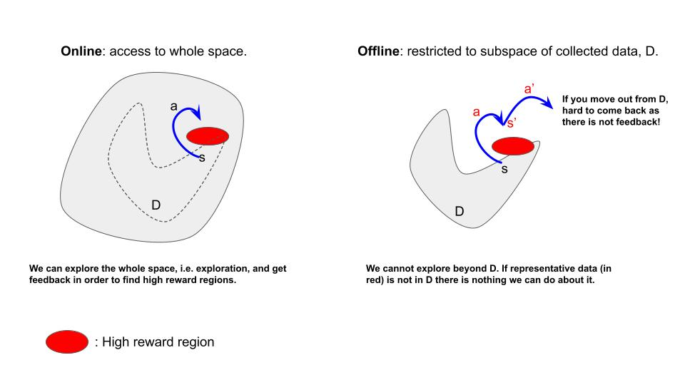
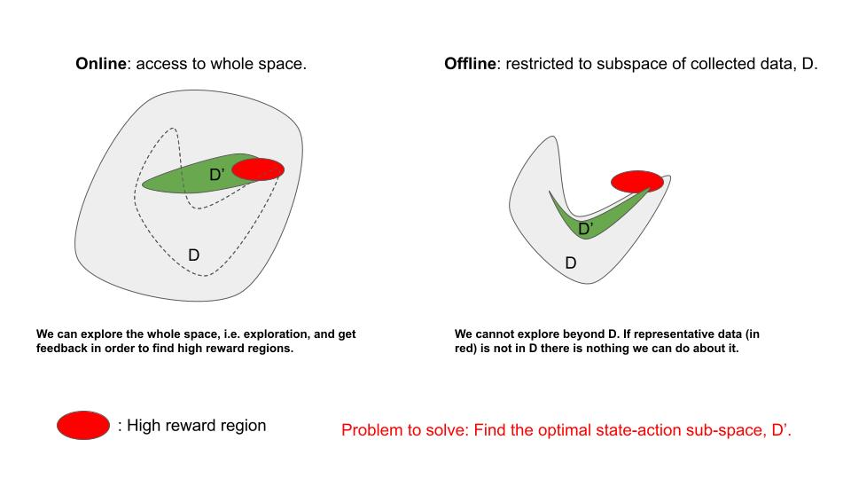

%%capture
%load_ext autoreload
%autoreload 2
%matplotlib inline
%set_random_seed 12
Introduction to Offline Reinforcement Learning#
Reinforcement learning algorithms mostly use online learning, which can be a challenge for their widespread adoption. RL involves continually learning from the environment by interacting with it based on the current policy and then using this learning to improve the policy.

Why RL with data could be a very good approach:
Online interaction isn’t always practical or safe due to expensive or risky data collection, especially in fields like robotics and healthcare.
Even when online interaction is possible, there’s often a preference for using existing data. This is especially true in complex domains where big datasets are crucial for effective learning.
Rewards could be complicated to build (think about self-driving cars) so if that knowledge is already present in your datasets you should use it. In offline RL you will need anyway to create a reward but it would be usually easier.
Offline Reinforcement Learning: also called Batch Reinforcement Learning, is a type of RL that uses large datasets collected beforehand for real-world applications on a large scale.
With offline RL, the agent is trained using static datasets without any online interaction or exploration, which sets it apart from online RL methods.
Some examples where offline RL could be highly beneficial:
Decision’s Making in Health Care: In healthcare, we can use Markov decision processes to model the diagnosis and treatment of patients. Actions are interventions like tests and treatments, while observations are patient symptoms and test results. Offline RL is safer and more practical than active RL, as treating patients directly with partially trained policies is risky.
Learning Robotic Manipulation Skills: In robotics, we can use active RL for skill learning, but generalizing skills across different environments is challenging. Offline RL allows us to reuse previously collected data from various skills to accelerate learning of new skills. For example, making soup with onions and carrots can build on experiences with onions and meat or carrots and cucumbers, reducing the need for new data collection.
Autonomous Driving: Training autonomous vehicles in real-world environments can be dangerous and costly. Offline RL can use data from past driving experiences to improve vehicle control and decision-making, making it safer and more efficient.
Energy Management: Optimizing energy consumption in buildings or industrial processes can be a critical task. Offline RL can analyze historical energy usage data to develop efficient control strategies, reducing energy costs and environmental impact.
Finance: Portfolio management and trading strategies often require learning from historical financial data. Offline RL can help develop and refine investment policies by utilizing past market data.
Problem Overview: Offline vs. Online RL#
The offline RL problem can be defined as a data-driven approach to the previously seen online RL methods.
As before, the goal is to minimize the discounted expected reward. However, as pictured in fig.2, this is also one of the main difference between on-line and offline-rl. In online RL:
while in offline RL: $\( J (\pi) = \mathbb{E}_{ \color{red}{\tau \in D} \sim \pi(a|s)^{\text{offline}}} \left[ \sum_{t = 0}^{\infty} \gamma^t r (s_t, a_t) \right] \simeq {1 \over n} \sum_{i=0}^n R(\tau_i) \)\( with the dataset, \)D = { \tau_i, i=1,..,n }$.

The goal of offline RL is to derive an optimal or near-optimal policy directly from \(D\) without requiring further interactions with the environment.
As shown in the previous slide, in offline RL, we try to find the best trajectories within the dataset, in contrast to online RL, where the goal is to find the best possible one in the entire space.

Note that \(D\) doesn’t necessarily need to be related to the specific task at hand, but it should be sufficiently representative (i.e., containing high-reward regions of the problem). If \(D\) is derived from data collected from unrelated tasks, we will need to design our own reward function, just as we did in the online RL setting.
Notation: The behavior policy, \(\pi_b\) or \(\pi_\beta\) is usually a suboptimal policy, a random policy or provided by a human expert, or a mixture of them.
As an example of a behavior policy (\(\pi_b\)), when training a robot to navigate a room, \(\pi_b\) might involve rules like “avoid obstacles,” “move forward,” or “stop.” It could be operated manually by a human who controls the robot based on sensor data, such as lidar for collision detection, or it could be a combination of suboptimal policies.
Offline RL vs supervised learning#
But if the goal of offline RL is to derive an optimal policy from data, why not try a supervised learning approach to learn \(\pi(a|s)\)? Is it a viable approach?
Yes, it is. This approach is called Imitation Learning (IL).
Main differences between IL and offline RL:
1 - In IL, the policy closely mirrors the behavior policy so the collected data is attached to the task you want to solve so it must contain expert data.
2 - in offline RL, the aim is a superior policy, ideally close to the optimal one, and the data doesn’t need to be related to the task to solve and it can be far from optimal.
3 - In IL you don’t need to create a reward function for your task. Quite useful in situations where creating a reward function directly is not feasible, such as when training a self-driving vehicle. However, you need a reward function on offline RL.
Behavioral Cloning (BC) is one of the simplest imitation learning algorithms, which essentially involves applying supervised learning to expert data collected during demonstrations:
and, \(\pi_\theta(s_t)\), typically a DNN. BC aims to minimize the discrepancy between the actions produced by the learned policy and the actions demonstrated by the expert.
IMPORTANT: In general, offline RL tends to outperform imitation learning in terms of performance, but imitation learning is faster and cheaper. If you have a fair amount of expert data, it can provide good results quickly and cost-effectively compared to offline RL.
Summary so far:
Online RL aims to find the best trajectories for a given task, whereas offline RL aims to find the best trajectories (combination of dataset trajectories) for the task within the provided dataset.
Offline RL can utilize datasets generated from different tasks, requiring the definition of rewards in such cases.
There are two primary approaches for offline learning: Imitation learning and Offline RL.
Online vs offline learning comparison.#
We will now compare online RL with the previously introduced offline methods: Offline RL and IL.
One of the key distinction between online RL and offline RL/IL lies in their exploration capabilities. In online RL, we actively explore the state-action space, while offline RL/IL operates solely within a fixed dataset (denoted as \(D\)). Going “out of distribution” beyond this dataset in offline RL/IL can lead to severe issues.
Online RL involves interactive exploration to discover the highest-reward regions by gathering environmental feedback. In contrast, offline RL imposes strict limitations on exploration beyond the dataset. This constraint results in algorithms overestimating unknown areas and attempting to navigate beyond the dataset, as illustrated in the figure below where the dataset doesn’t fully represent high-reward regions.
As shown in the figure above on the right, once you are out of distribution (o.o.d) (states \(s\) and \(s'\) in red), as you don’t have any feedback it will be hard to come back to \(D\), as the o.o.d errors will propagate. As we will see this is one of the main challenges of offline RL and there are different techniques to mitigate this wrong behavior.
If you don’t follow the explanation below, don’t worry; just accept that once out of distribution (o.o.d.) occurs, it will be hard to return to in-distribution
Let’s try to get some intuition:
Consider a cost function given by: \( c(s,a) = 0 \text{ if } a = \pi^\beta(s)\), otherwise \(c(s,a)=1\), where \(\pi^\beta(s)\) represents the behavior policy. Additionally, assume that \( \pi_\theta (a \ne \pi^\beta(s) | s) \le \epsilon \text{ for all } s \in D_{\text{train}} \) . The total error can then be estimated as:
with \(H\) being the time horizon.
Question: What is the error if the episode terminate as soon as you are out-of-distribution?
Solution: The error is of \(O(\epsilon H)\).
When working with datasets, sometimes important data is missing, especially if it’s hard for the behavioral policy to collect (left figure). A good offline RL algorithm should be able to generate this missing data, which is impossible for imitation learning.
On the other hand, if the data is missing because it’s outside the behavior policy’s capabilities (i.e., it’s truly o.o.d. data), then the algorithm should detect this and avoid generating it. There could be valid reasons why these states were excluded during data collection.
This is not a major issue in general but it is important to mention:
The o.o.d. issues are not the only distributional shift effect in offline RL. After computing the optimal policy, it typically operates within a subset of the original dataset distribution, creating a distinct form of distributional shift (D’ subset in green in the figure below). Evaluating a policy substantially different from the behavior policy reduces the effective sample size (from D to D’), resulting in increased variance in the estimates. In simpler terms, the limited number of data points may not accurately represent the true data distribution.
So far, we have focused on the differences between online and offline RL, but as we will see in nb_3_offline_RL_theory.ipynb there are many points of contact. We will later explore how different techniques from online RL, particularly those from off-policy RL, can be applied to offline RL.
Summary:
In offline learning, it’s important to avoid out-of-distribution (o.o.d.) data since there may be valid reasons why these points are excluded from the dataset. Additionally, transitioning back to in-distribution data after encountering o.o.d. data can be challenging. This is not a concern in online RL.
In offline learning, when data is missing from your dataset, it’s difficult to predict whether it’s due to collection issues or if it’s truly an out-of-distribution (o.o.d.) case. Imitation Learning (IL) cannot address this issue, but Offline RL attempts to determine the situation. If the data belongs to the behavioral policy distribution, it should be added since it could lead the agent to a high-reward region.
If your dataset lacks representative data, there’s little you can do, and the solution is to collect more high-quality data.
Offline RL/IL pipeline#

Step 1 - Data: Typically, you’ll have a simulator/environment along with a behavior policy, \(\pi_b(a|s)\), in order to collect data or instead access to historical data.
Step 2 - Dataset Manipulation: We’ll adopt a standard format widely used in the offline RL community, facilitated by the Minari library, which will be introduced later.
Steps 3/4/5 - Dataset Feeding, Algorithm Selection, and Training: These tasks will be carried out using the Tianshou RL library.
Important Note#
On the exercises notebooks a 2D grid environment will be primarily used, for two important reasons:
It allows for quick training and data collection, making trainings and data-collection quite fast giving the possibility to play around with different ideas!
Simplifying and customizing the environment to introduce varying levels of complexity in a controlled manner, along with the option to create your own straightforward behavior policies, can facilitate a clearer exploration of the core concepts and advantages of offline Reinforcement Learning (RL), which can be quite challenging or almost impossible with high-dimensional spaces.**
Please note that the code provided (src/offline_rl folder) is adaptable to tackle more intricate environments and tasks. Don’t hesitate to experiment with it on your own. Be prepared for some patience, as training in RL can be time-consuming when dealing with complex problems!